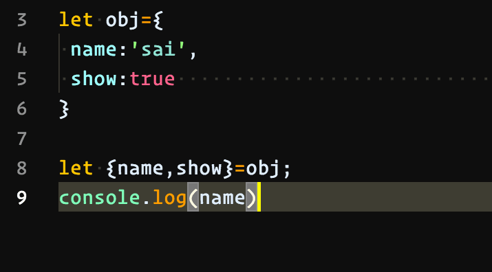

Apa Itu JavaScript
image.1.0 Tahukah kamu bahwa JavaScript adalah bahasa pemrograman yang digunakan dalam pengembangan website agar lebih dinamis dan interaktif. Kalau sebelumnya kamu hanya mengenal HTML dan CSS, nah sekarang kamu jadi tahu bahwa JavaScript dapat meningkatkan fungsionalitas pada halaman web. Bahkan dengan JavaScript ini kamu bisa membuat aplikasi, tools, atau bahkan game pada web. Bicara teknis, JavaScript atau kita singkat menjadi JS merupakan bahasa pemrograman jenis interpreter, sehingga kamu tidak memerlukan compiler untuk menjalankannya. JavaScript memiliki fitur-fitur seperti berorientasi objek, client-side, high-level programming, dan loosely typed. Sejarah JavaScriptimage.2.0 Bagi kamu yang masih awam, mungkin penasaran bagaimana awal mulanya diciptakan bahasa pemrograman ini. Pada tahun 1994 JavaScript mulai dikenal, pada saat itu web dan internet sudah mulai berkembang. JavaScript didesain oleh Brendan Eich yang merupakan karyawan Netscape. Transformasi nama JavaScript, dimulai dari Mocha, Mona, LiveScript, hingga akhirnya resmi bernama JavaScript. Versi awal bahasa JS hanya dipakai di kalangan Netscape beserta dengan fungsionalitas pun yang masih terbatas. Singkat cerita pada tahun 1996 JavaScript secara resmi dinamakan sebagai ECMAScript. ECMAScript 2 dikembangkan pada tahun 1998 yang dilanjutkan dengan ECMAScript 3 setahun kemudian. ECMAScript terus dikembangkan sampai akhirnya menjadi JavaScript atau JS hingga saat ini. Pada tahun 2016, 92% web diketahui telah menggunakan JavaScript. Itulah mengapa JavaScript atau JS terus berkembang.
Saat ini JavaScript tidak hanya digunakan di sisi client (browser) saja lho. Semenjak adanya Node.js JavaScript dapat digunakan di luar dari browser. Dengan begitu kamu bisa mengembangkan back-end (server), console, program desktop, mobile, IoT, game, dan lainnya menggunakan JavaScript. Setiap bahasa pemrograman memiliki tingkat kesulitan yang berbeda. Tingkat kesulitan bisa dilihat dari beberapa faktor. Menurut saya sih, syntax atau penulisan jadi salah satu faktor yang paling penting buat dipelajari. JS masih tergolong mudah dipelajari asalkan kamu serius dalam belajar dan selalu berani melakukan improvement atau bermain-main dengan itu. Masih belum percaya JS mudah dipelajari? Baiklah, ini perbandingan JS dengan beberapa bahasa lainnya. Contohnya dalam menampilkan “Hello World!” ya. Kamu harus tau! JavaScript termasuk bahasa pemrograman yang sudah mature, sifat inilah yang membuat JavaScript sangat powerfull. Dulu, website basisnya masih PHP atau mungkin saja kita pakai WordPress. Semua logika web dibuat dan bergantung pada sisi server. Inilah yang membuat web browser lebih statis. Browser modern memiliki sifat interaktif dan dinamis. Logika yang sebelumnya harus di-handle oleh sisi server, kini sepenuhnya dapat di-handle pada sisi client, semua berkat JavaScript. Siapa yang nggak mau kerja di startup? Iya pasti maulah, jika gajinya besar hehe. Kamu akan dibutuhkan perusahaan seperti startup jika serius untuk belajar JavaScript. JavaScript menempati urutan ke-4 soal gaji developer tertinggi di tahun 2018 dengan rata-rata pendapatan adalah $105,415 (Techrepublic). Bayangkan jika dirupiahkan? Apalagi pada tahun ini bisa makin lebih besar nih. Dan lebih manisnya lagi, jika kamu bekerja sebagai developer Google dsb karena mereka semua sudah menerapkan JavaScript sebagai penunjang teknologi. Dan itupun juga tergantung pada level pemrograman kamu dan juga posisi kerja. Inilah salah satu alasan JavaScript banyak digandrungi oleh developer. Dukungan dari komunitas adalah hal penting dalam memilih sebuah bahasa pemrograman. Tentu saja, jika kamu sedang mengembangkan sebuah aplikasi, serta menemukan bug. Dengan dukungan komunitas yang baik, maka kamu akan lebih mudah untuk menemukan solusi dari bug tersebut. Contoh JavaScript image.3.0 Lho, kok nggak muncul tulisan “Sai”. Jangan khawatir! Sebab perintah console.log() hanya akan menampilkan pesan ke dalam console JavaScript saja. Kalian bisa cek di inspect disitu akan muncul "Sai" berikut codingan simpel JavaScript. |